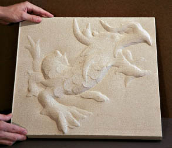

Back from Siggraph
Siggraph has been a lot more interesting the last couple of years. For a while there it felt as though there was an algorithm for generating Siggraph papers: dig through 100 year old physics papers, then do the straight-forward brute force numerical evaluation. Moore's law creates magic. In Glenn Entis's keynote he did a lot of then/now comparisons of the progression of images in Siggraph papers. Exponentials are powerful things. But it's amazing how the complexity of the universe sucks up that performance gain: just turn on "radiosity" in your favorite renderer, and watch a decade of gains slip away. But hey, it works! A decade ago radiosity was a too-expensive curiosity.I really liked the blend of beauty and cleverness that wove through a lot of the papers this year. One of my favorites on that scale was Digital Bas-Relief from 3D Scenes by Weyrich et.al. It's all about the gradient field! Throw away Z. Cool... Some, like Rendering for an Interactive 360º Light Field Display had a delightfully Rube Goldbergesque feel to them: what would you do with a strange spinning mirror and a 5000 (yes, five thousand) frame-per-second graphics card and projector?
| August 14, 2007 |